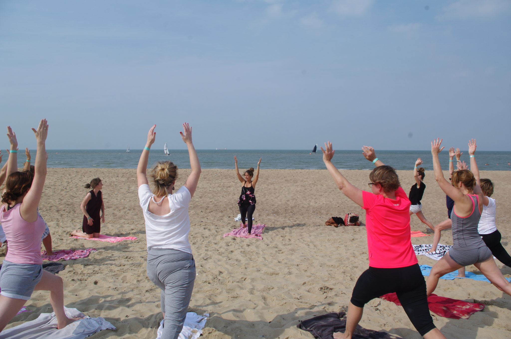
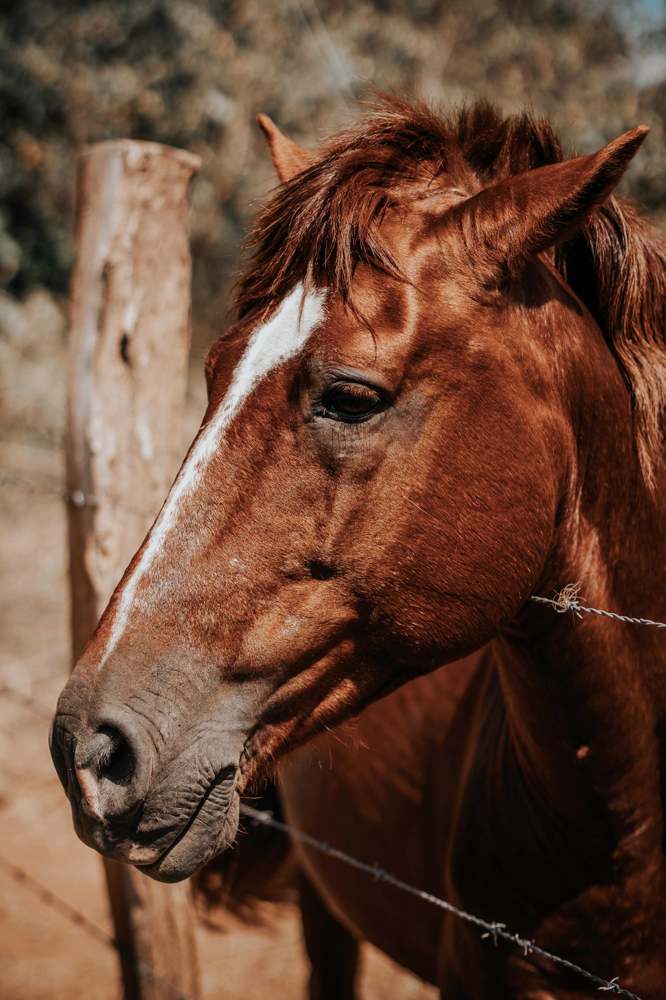
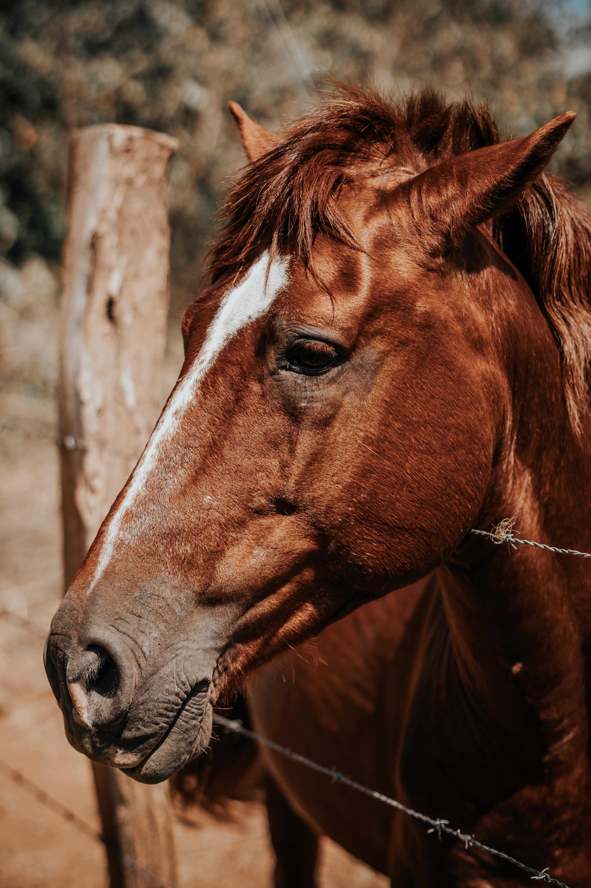
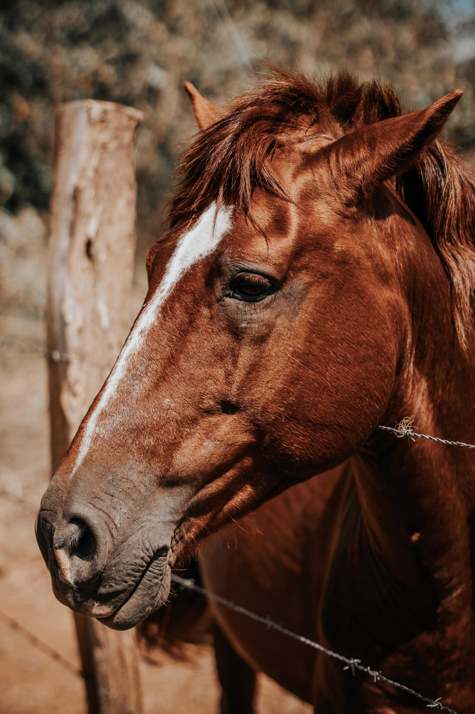
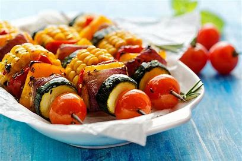
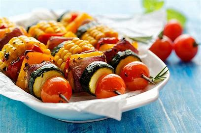

 



Oferta Gastronómica
Comida preparada con amor e intensión no sólo de nutrir tu cuerpo sino también tu alma, preparada con ingredientes de la huerta y mercado local. Dieta adaptada a los grupos, principalmente vegetariana.

 

Acomodación
Contamos con habitaciones confortables de tipo, individual una persona, individual para pareja, o grupos de hasta 5 personas.